Protagonistas
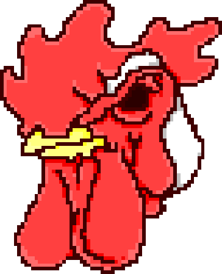
Jacket
O silencioso homem da jaqueta varsity. Jacket atende ligações misteriosas que o levam a uma sequência de missões violentas em uma Miami distorcida dos anos 80. Sem demonstrar emoções ou questionar ordens, ele executa cada tarefa com precisão brutal, deixando em aberto se age por dever, lavagem cerebral ou culpa reprimida.
- Arma: O que estiver ao seu alcance
- Habilidade: Utilização de várias mascaras
- Status: Ativo
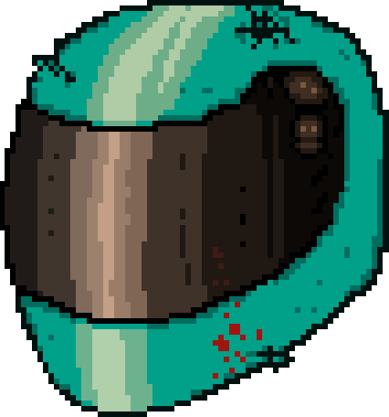
Biker
Cansado de obedecer ordens sem respostas, Biker rompe com o ciclo de violência imposto pelas ligações telefônicas. Ele busca entender quem está por trás das mensagens e por que tudo acontece. Sua postura é mais impulsiva e questionadora, tornando-o uma ameaça tanto aos inimigos quanto ao sistema que controla Miami.
- Arma: Cutelo
- Habilidade: Arremesso de facas
- Status: Desertor
Figuras Importantes
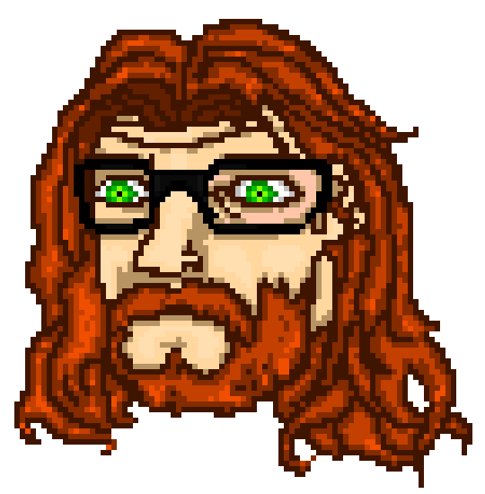
Beard
Conhecido de Jacket, Beard surge em momentos mais calmos, sempre em ambientes comuns como lojas e restaurantes. Ele se mostra tranquilo, educado e disposto a conversar, contrastando com a violência constante das missões. Sua presença cria pausas na ação e transmite uma sensação de normalidade em meio ao caos urbano de Miami.
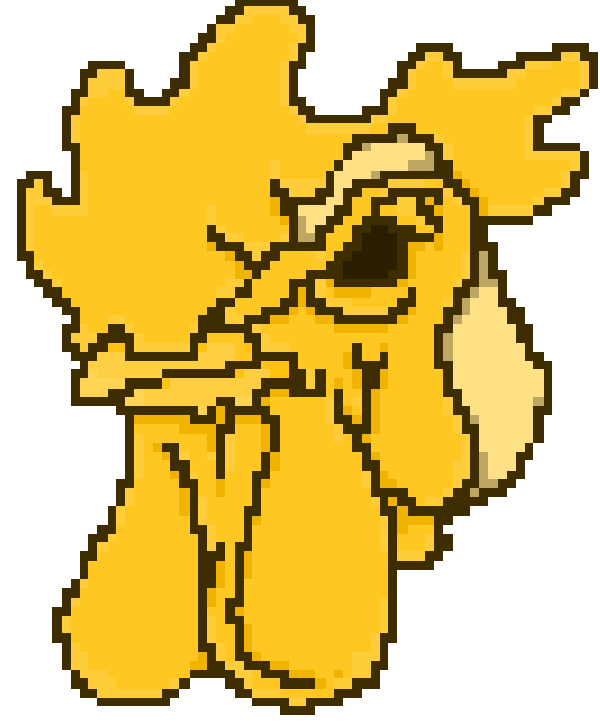
Richard
Figura enigmática e recorrente, Richard aparece nos momentos mais introspectivos e perturbadores nos sonhos de Jacket. Com sua máscara de galo e postura tranquila, ele fala de forma calma e quase filosófica, questionando as ações do protagonista e a natureza da violência. Richard representa a consciência, o destino e a inevitabilidade das escolhas, surgindo como um observador silencioso do caos que se desenrola.
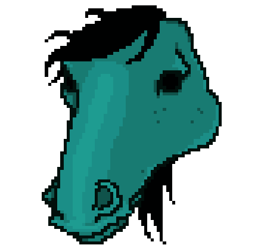
Don Juan
Don Juan surge em ambientes domésticos e cotidianos, sempre acompanhada de uma atmosfera estranhamente serena. Com sua máscara de cavalo e fala gentil, ela transmite conforto e normalidade, contrastando com a brutalidade do mundo exterior. Sua presença simboliza o desejo por uma vida simples e afetiva, um vislumbre de estabilidade em meio à espiral de violência.
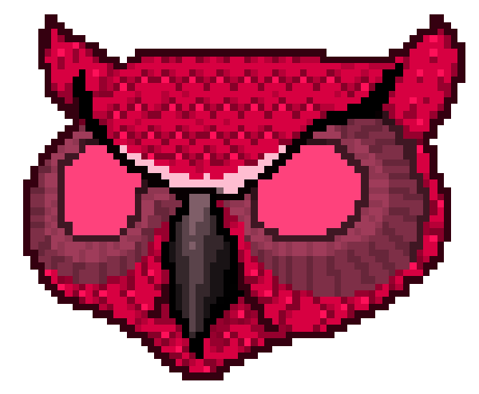
Rasmus
Rasmus aparece como uma figura inquietante e desconfortável, frequentemente em cenários escuros e silenciosos. Usando uma máscara de coruja e mantendo um tom apático, ele provoca reflexões sobre culpa, consequências e o vazio deixado pela violência. Sua presença é fria e opressiva, reforçando a sensação de que nada do que foi feito pode ser realmente apagado.
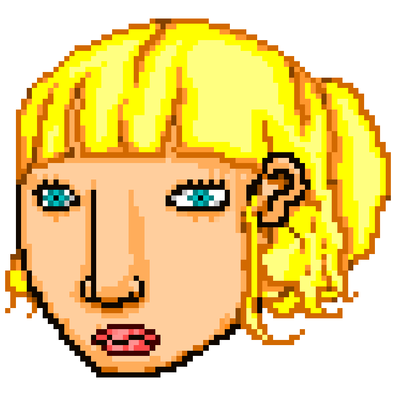
Girlfriend
Representa um raro ponto de afeto e humanidade na história. Reservada e prática, ela se adapta ao mundo violento ao seu redor sem nunca abraçá-lo totalmente. Sua relação com Jacket é silenciosa, mas significativa, simbolizando a tentativa de construir algo normal em meio ao caos. Mesmo sem compreender completamente os acontecimentos, ela oferece um senso de lar e pertencimento.
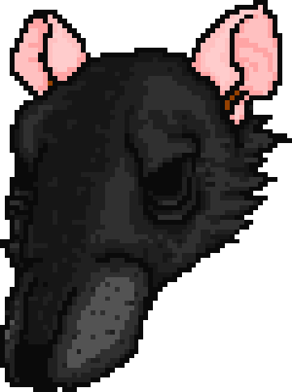
Richter
Solitário, introspectivo e emocionalmente desgastado. Richter, executa suas ações com relutância e culpa, especialmente por causa de sua mãe. Diferente de outros, Richter não demonstra prazer na violência, sua presença transmite medo, obrigação e arrependimento, mostrando o custo psicológico desse mundo brutal.
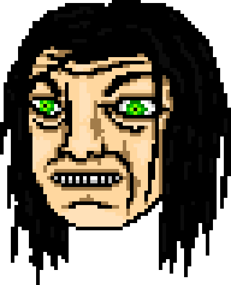
The Father
Líder frio e calculista da Máfia Russa, profundamente ligado ao poder e à vingança. Sempre composto e silencioso, ele age com precisão e estratégia, tratando a violência como uma ferramenta necessária. Sua figura representa o ciclo interminável de ódio e retaliação, onde o controle emocional esconde uma obsessão destrutiva.
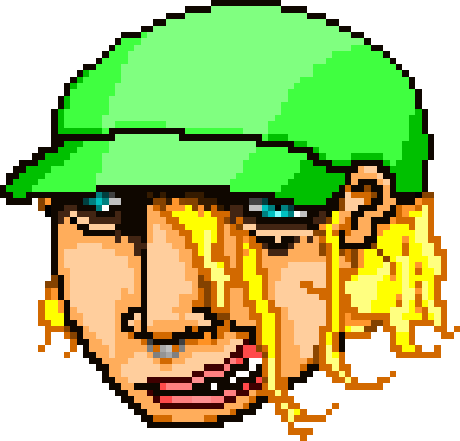
Janitor Dennis
Calmo, irônico e quase provocador, ele conduz diálogos cheios de duplo sentido. Sua postura relaxada contrasta com o peso das informações que carrega, sugerindo que ele entende muito mais sobre os acontecimentos do que revela. Atua como um observador ativo do caos, manipulando informações com leveza inquietante.
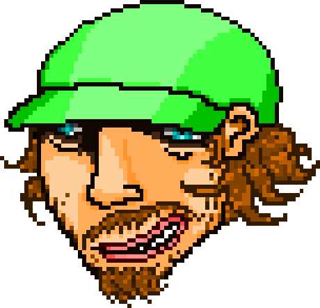
Janitor Jonatan
Mais direto e sério, ele complementa o parceiro com comentários secos e objetivos. Sua presença reforça a sensação de vigilância constante e de que há forças maiores controlando os eventos. Juntos, os dois representam o mistério por trás da narrativa, quebrando a quarta parede de forma sutil e perturbadora.